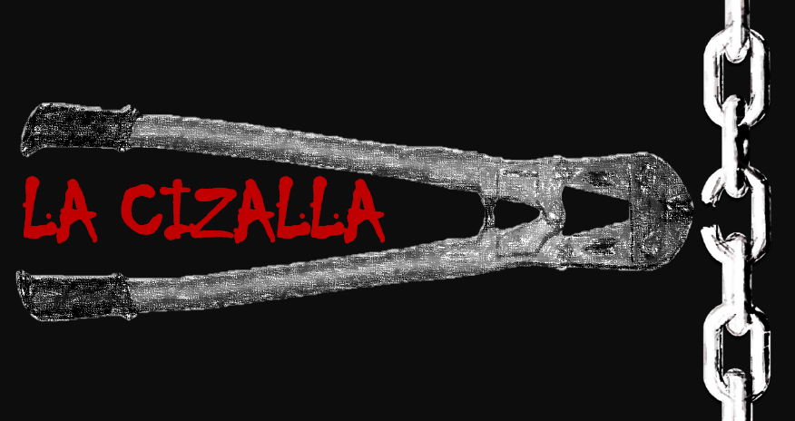

Espacio de opinión, análisis y cuestionamiento, que busca entender la decadente sociedad humana
alig="center">
Entes corporativos que controlan el planeta, destrucción y extinción de ecosistemas y de biodiversidad, crueldad ejercida a las formas de vida no humanas, y el sometimiento de la humanidad a una violenta desigualdad social, son algunos de los motivos para cuestionar y analizar la estructura y las dinámicas de la sociedad
A través de medios audiovisuales y de lecto-escritura, se busca visibilizar realidades que no son de conocimiento general, por consiguiente, son poco cuestionadas